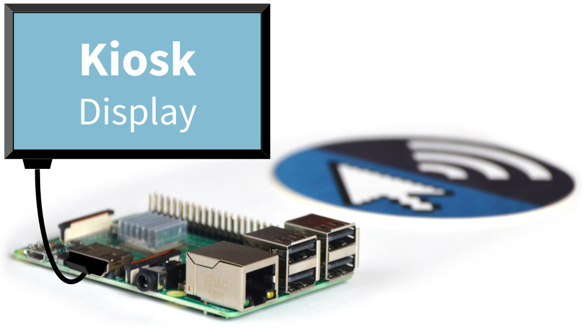

Configure a Raspberry Pi as a kiosk display
Our step-by-step guide to configure a Raspberry Pi as a kiosk display that runs automatically on boot.
The TL;DR (Too Long; Didn't Read)
Learn how we at reelyActive configure a Raspberry Pi as a kiosk display.
The Raspberry Pi can act as a digital display driver thanks to its HDMI port.
- What will this accomplish?
- The Pi will automatically display a specific web page in full screen mode on any HDMI-connected screen via the Chromium browser.
- Why use a Pi?
- A Pi is a cost-effective and easily sourceable device for driving kiosk displays.
- Does this apply only to the Pi?
- The process should apply equally well to other Debian Linux-based platforms.
Prerequisites
A Raspberry Pi (or equivalent) with Raspberry Pi OS Lite installed.
-

-
Prepare a Raspberry Pi from scratch
Our step-by-step tutorial on how we install and configure Raspberry Pi OS Lite on a Pi.
-

-
[OPTIONAL] Run Pareto Anywhere on a Raspberry Pi
Install and run Pareto Anywhere on a Pi to make any physical space context-aware.
Installing X11 and Chromium Step 1 of 2
Install the X Window System (X11), the Chromium browser and kiosk-mode dependencies.
- Do I need to SSH into the Pi?
- Yes. If you forgot how, recall Step 4 from the Pi Prep tutorial.
- Why X11?
- Raspberry Pi OS Lite does not include a display system by default, so the the X Window System must be installed manually.
Prerequisites
Both the Pi and the computer used for its configuration must be on the same network, with which they can access the Internet.
Boot the Pi and connect via SSH Part 1
With the prepared micro SD card inserted into the Pi, complete the following:
- Apply power to the Raspberry Pi
- Open a terminal on the computer and SSH into the Pi with the command
ssh pi@xxx.xxx.xxx.xxxreplacing the x values with the Pi's IP address - When prompted enter the password (berryinsecure is the default)
If you're still using the default password, this is as good a time as any to change it. Simply run sudo raspi-config
Install the X Window System (X11) Part 2
From the same terminal connected to the Pi via SSH:
- Install xserver-xorg with the command
sudo apt-get install --no-install-recommends xserver-xorg - Install xinit with the command
sudo apt-get install --no-install-recommends xinit - Install x11-xserver-utils with the command
sudo apt-get install --no-install-recommends x11-xserver-utils
Install Chromium and kiosk dependencies Part 3
From the same terminal connected to the Pi via SSH:
- Install chromium-browser with the command
sudo apt-get install chromium-browser - Install the kiosk dependencies with the command
sudo apt-get install matchbox-window-manager xautomation unclutter - Optionally, install colour emojis 🤓 with the command
sudo apt-get install fonts-noto-color-emoji
Configure boot and display options Step 2 of 2
Auto-login on boot and start kiosk mode from a script.
- Why auto-login?
- The pi user will launch X and Chromium, and therefore must be logged in.
- Why call a script from .bashrc?
- It is difficult to get Chromium to run (as the pi user) from the rc.local file.
From the same terminal connected to the Pi via SSH:
Create the kiosk startup script Part 1
Create a new file called kiosk in the pi user's home folder with the command nano ~/kiosk and paste in the following template, updating the URL on the last line as required (unless you like this tutorial so much that you plan to display it on a big screen!):
#!/bin/sh xset -dpms # disable DPMS (Energy Star) features. xset s off # disable screen saver xset s noblank # don't blank the video device matchbox-window-manager -use_titlebar no & unclutter & # hide X mouse cursor unless mouse activated chromium-browser --display=:0 --kiosk --incognito --window-position=0,0 https://reelyactive.github.io/diy/pi-kiosk/
Make the kiosk script file executable with the command chmod 755 ~/kiosk
Add the kiosk script to .bashrc Part 2
Initiation of the X Windows System and the kiosk script will be added to the pi user's .bashrc file which runs each time the Pi boots.
Edit the ~/.bashrc file with the command nano ~/.bashrc to include the following as the last line:
xinit /home/pi/kiosk -- vt$(fgconsole)
Configure boot and display with the raspi-config tool Part 3
From the command prompt on the Pi , enter the command sudo raspi-config which will open a text-based menu. Update the configuration as per the following table where the settings are indicated in [ ].
| # | Option | Action(s) |
|---|---|---|
| 2 | Display Options |
D2 Underscan
|
| 1 | System Options |
S5 Boot / Auto Login
|
Upon completing the above, select <Finish> and select <Yes> when prompted to reboot. If a display is connected via HDMI, following the boot sequence, the Chromium browser should open in kiosk mode and display the specified webpage.
Configure custom settings (OPTIONAL) Part 4
Depending on your display and Pi configuration, it may be necessary to configure additional settings to achieve the desired functionality. Many of these settings can be found in The config.txt file, which is well documented—and the place to look first!
Edit the display_rotate_hdmi property and disable the DRM VC4 V3D driver for portrait displays:
# /boot/config.txt # 0 = 0°, 1 = 90°, 2 = 180°, 3 = 270° display_hdmi_rotate=1 # Comment out DRM VC4 V3D driver for portrait mode #dtoverlay=vc4-kms-v3d #max_framebuffers=2
Thanks to Mike for validating this configuration on a Pi 3B!
Again, check The config.txt file first! And if you complete a non-obvious kiosk configuration that you think would benefit the community, contact us and we'll be happy to document it here.
Display Pareto Anywhere Apps (OPTIONAL) Part 5
If Pareto Anywhere is running on the Pi, any of the Pareto Anywhere Apps can be displayed in kiosk mode, such as the following, simply by updating the URL in the kiosk file (see Part 1):


Tutorial prepared with ♥ by jeffyactive.
You can reelyActive's open source efforts directly by contributing code & docs, financially with an annual subscription, and collectively by sharing across your network.Where to next?
Continue exploring our open architecture and all its applications.
-
-
Run Pareto Anywhere on a Raspberry Pi
Install and run Pareto Anywhere on a Pi to make any physical space context-aware.
-

-
reelyActive Developers
Browse all developer documentation and tutorials.
-

-
reelyActive
Let's put things in context, one space at a time.